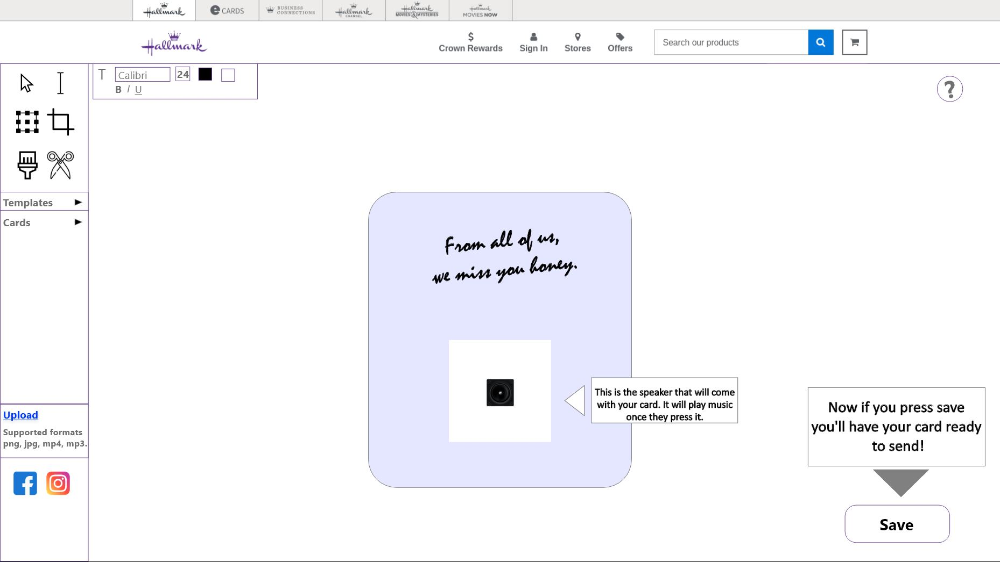
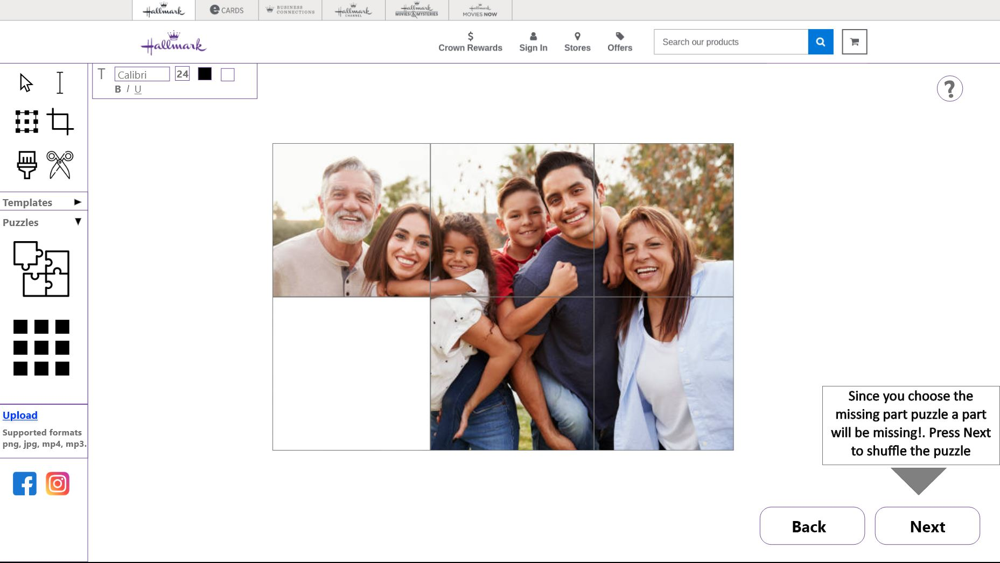
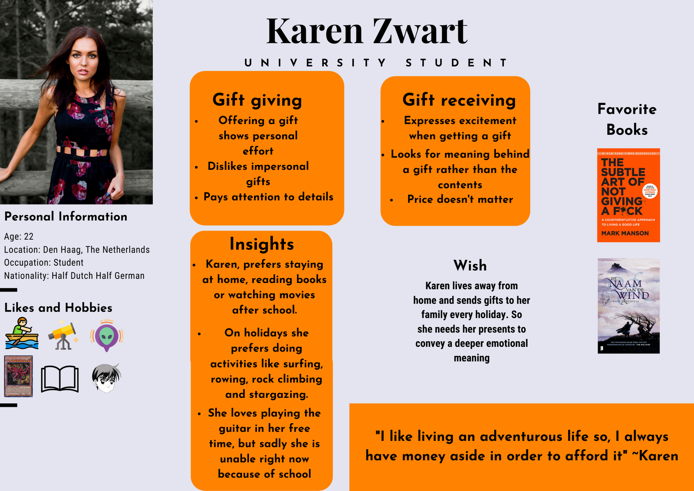
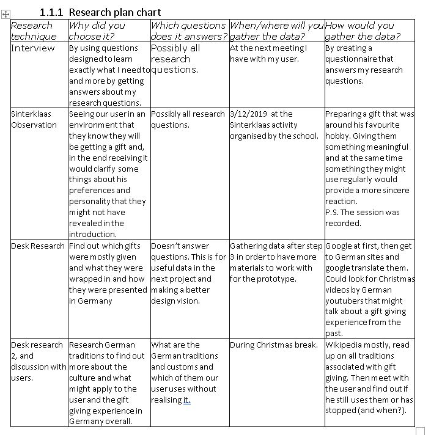
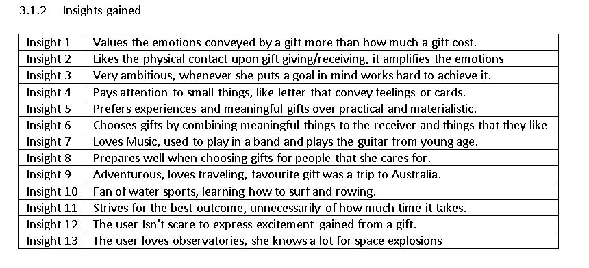

Project Details
Project Bespoke Design
Project Description:
Card personalisation tool. Creating our own Card personalisation tool was one of the hardest projects I've had so far. The project was devided into 2 parts and it was a group project of 2 people. I will speak only about the second part here but the first part of the project can be found bellow. This is the Card personalisation tool I've come up with based on the information and situation for our persona. Persona can be found also bellow.
CPT Description:
The card personalisation tool is designed for Karen and her loved ones. Karen is someone who doesn't like intangible gifts but loves giving gifts to her family and loved ones. Furthermore, She doesn't like gifts which are materialistic and impersonal but rather she loves gifts which are memorable and full of experiences. The user can choose from having 3 different style cards. The first one being the Picture book. The picture book basically is a online picture album but more interactive and modern. The Musical card is an addition because karen's biggest hobby is playing the guitar. She learnt how to do so from her father and she loves listening to him play. Therefore, I made this card for exactly that. With the musical card the user is able to send a recording of their choice and have it play upon the opening of the card. Last but not least is the puzzle card option. This is exactly what it says it is. It's a puzzle but the puzzle is meant to be a memorable moment such as a happy family photograph on a vacationn. The idea is to solve the puzzle and only then the emotional message will be conveyed to the receiver.

- 
- 
Persona Karen Zwart
Used Techniques for Project
- 

Outcome of research techniques used
Using the techniques shown above I manged to gather those insights:
Click here to see the interview questions
Design Vision
Karen is 22 years old female UXD student. She is from the Netherlands although she is half German. Karen is a person who values personal effort and meaning in a gift and not how much it costs. For her it's important the emotions and feelings felt upon the gift experience. She seeks a digital gift experience that she relates to and triggers the aspects that are important for her, such as meaningful and personal. Therefore, it is essential to design a system which supplies a virtual personalised experience as well as a meaningful one. We will be designing a unique gift receiving experience for Karen who is missed by her friends in Germany. It's important to implement aspects of what Karen values in order to make the gift receiving experience more memorable and meaningful. To make the gift giving experience more personal, letters or small notes are essentials, it shows effort and thoughts, all important things for Karen. It is therefore, necessary to design a token and a topic which resemble Karen's hobbies and preferences also which gives a meaningful and personal experience. Hallmark is a company which brings smiles to people for more than 100 years. Hallmark was founded in the 1910 in the US and is one of the most proficient and experienced manufacturers of greeting cards in the world. They are dedicated to, creating gift giving experiences which convey emotions, meaning, love and support and it’s a great way to show how much you care for someone who lives far away.